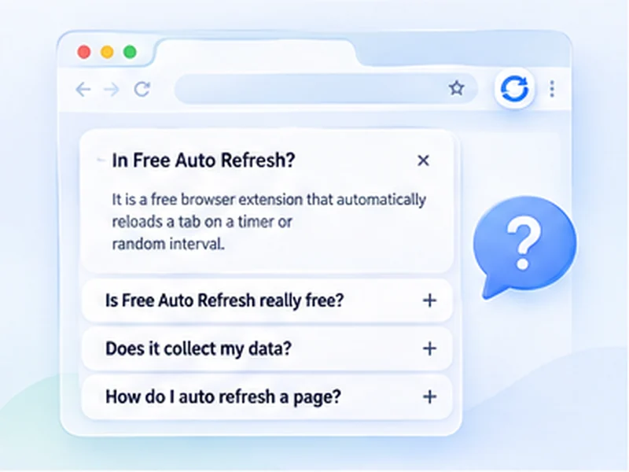

Frequently asked questions.
Everything people ask about auto refreshing pages, watching for changes, privacy and troubleshooting.

The basics.
What it is and what it costs.
What is Free Auto Refresh?
A free browser extension that reloads a tab automatically on a timer or at random intervals, and can alert you when the page changes.
Is it really free?
Yes. It is open source, with no ads, no account and no paid features.
Which browsers are supported?
Chrome 111 or newer, Chromium browsers such as Edge, Brave and Opera, and desktop Firefox 140 or newer.
Does it work on phones?
No. Mobile Chrome does not support extensions, and the Firefox build is desktop only.
Is it available in my language?
It is translated into English, Romanian, Russian, Chinese, Japanese, Bengali and Thai, and follows your browser language.
Refreshing pages.
Timers, intervals and limits.
How do I auto refresh a page?
Open the page, click the extension icon, pick an interval and press Start. See how to auto refresh a page.
What is the shortest interval?
One second. Very short intervals can get you rate-limited by some sites, so use them briefly.
Can I refresh at random intervals?
Yes. Set different minimum and maximum values; each refresh picks a new wait in between.
Does it keep running when I switch tabs?
Yes. It keeps refreshing in the background until you stop it, a limit is reached, or a watch rule matches.
Does it resume after I restart the browser?
Yes, if you ask it to. Open Advanced settings, Start automatically, and switch on Remember this page before you press Start. That page then starts refreshing by itself whenever it is opened again, including after a browser restart, until you press Stop. A tab the browser restores without loading it starts once you switch to it.
Can I change the quick presets?
Yes. Click Edit next to Quick presets in the popup, or open All settings. You can change the times, add presets, remove them, or go back to the defaults.
How do I stop it?
Press Stop in the popup, use the stop button on the on-page counter, or press Alt+Shift+R. See how to stop auto refresh.
Can it do a hard refresh every time?
Yes. Turn on Hard reload to bypass the cache on every refresh. See how to hard refresh.
Watching for changes.
Page monitoring and alerts.
Can it notify me when a page changes?
Yes. It can stop and notify you when text appears, when text disappears, or when the page content changes.
Can I watch only part of a page?
Yes. In Content changes mode, add a CSS selector such as #price to watch a single element.
How am I alerted?
With a desktop notification and a flashing tab title. The browser must be running.
Can it email or text me?
No. Alerts stay on your computer.
Why did it miss a change?
The content probably appeared after the check. Raise Extra wait under Watch the page.
Privacy and safety.
What it can and cannot see.
Does it collect my data?
No. It collects nothing and makes no network requests.
Why does it need access to all websites?
So the timer and counter can run on whichever page you choose. Nothing runs on a page until you press Start there.
Does it read what I type?
No. It only notices that you are typing, so it can hold the refresh. It never records the text.
Can it click buttons or fill in forms?
No. It reloads pages and alerts you; it does not act on the page.
Is auto refreshing allowed on every site?
No. Some sites forbid automated reloading in their terms. Check before using it on marketplaces, ticket sites and booking portals.
Troubleshooting.
When something does not work.
Why will it not run on this page?
Browsers block extensions on their own pages (chrome://, about:), the extension stores and the built-in PDF viewer.
Why did refreshing stop?
A limit was reached, a watch rule matched, the extension was updated, or the browser put the tab to sleep. Keep the tab awake is on by default to prevent the last one.
Why did I lose what I typed?
Smart pause delays the refresh while you type, then reloads a few seconds after you stop. Save or submit first.
Still curious? Try it.
Free for Chrome and Firefox. Nothing to sign up for.
Question not answered?
Ask on GitHub and it will be added here.